拯救心脏
智能软硬件结合的概念设计，挽救心脏骤停
医院外心脏骤停（OHCA）每年夺走数百万的生命，而心脏复苏术（CPR）是提高 OHCA 生存率的重要手段。
本项目以「提高 OHCA 生存率」为目标，设计了一套概念方案。
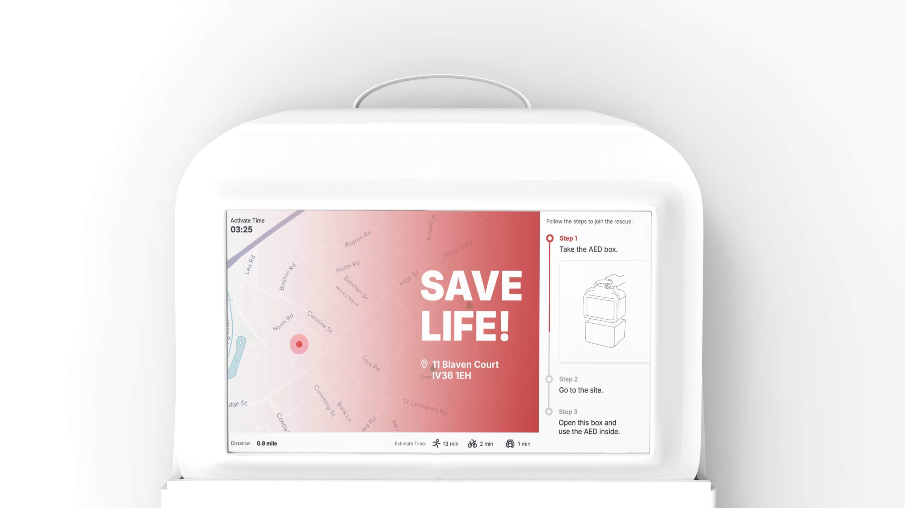调研与分析
绘制 Journey Map
前期调研中，我们阅读了大量文献，电话访谈了医务人员，同时比较分析了九个医院外心脏骤停的案例异同，我们利用我们得到的信息绘制了一份 Journey Map，帮助我们了解场景。
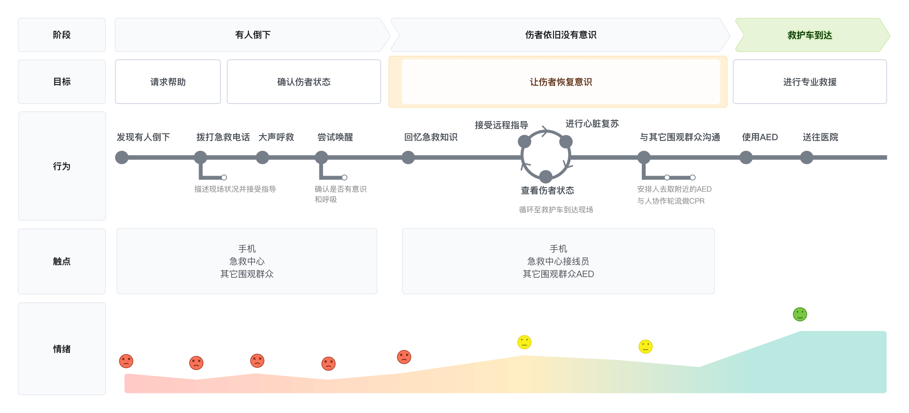卡片分类游戏
我们设计了卡片分类游戏对受访者进行急救水平测试。
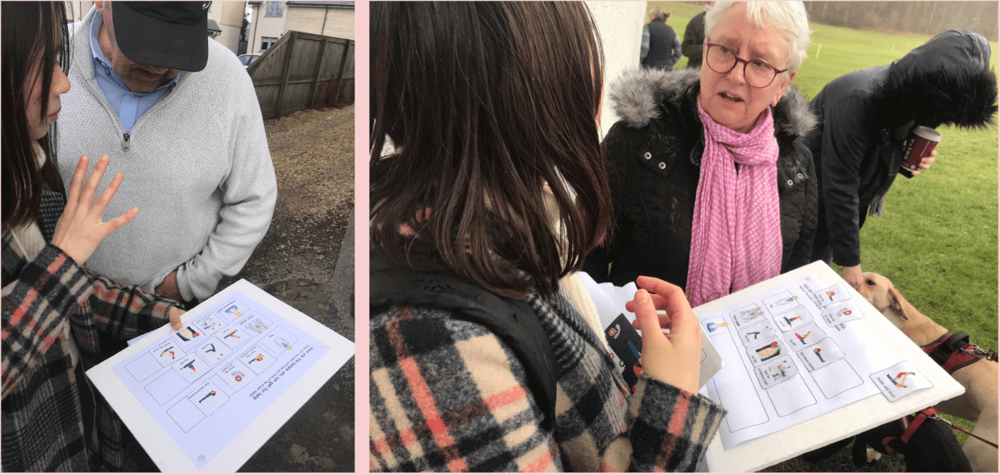线索串联
我们将收集到的信息进行分类与串联，确保我们的每一个调研结论都有证据支撑。
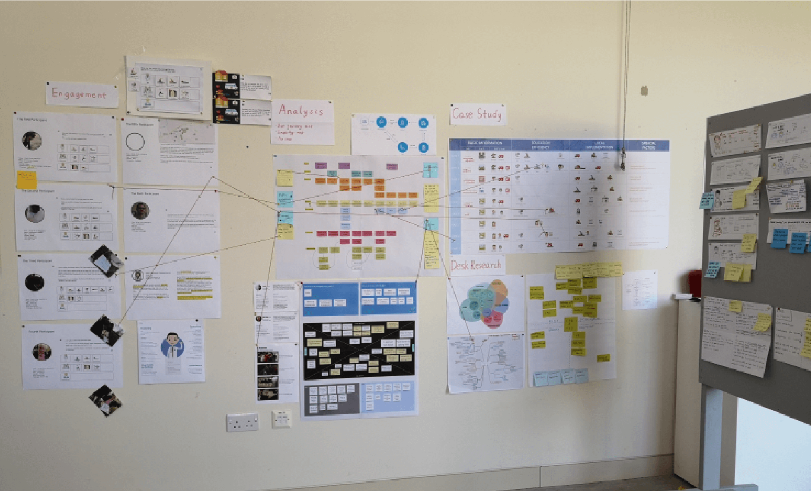定义痛点
关键洞察
1. 在任何情况下都需要第一时间拨打急救电话，这十分重要
2. 救援行动需要围观者进行基本的团队协作与多人配合
3. 自动体外除颤仪（AED）有时可以发挥重要作用
关键痛点
1. 接线员仅通过语音通话很难快速协调群众进行一场急救行动
2. 熟悉心脏复苏的人非常乐意帮忙，但他们不是每次都恰巧在现场
3. 大家普遍缺乏急救的协作意识
4. 少有人了解公共场所 AED 放置在何处
这些痛点可归纳为以下两个方面：
1.如何有效组织一场急救协作？
2.如何充分利用社区中已有的资源？
由此，得出我们的设计方向：
我们如何连接每个社区内已有的资源，使得社区内的急救合作更顺畅，充分释放社区的救援能力？
概念构思
寻找可能的机会触点
我们重新审视了UJM，并定位出关键触点，思考如何利用这些触点帮助我们达成设计目标。
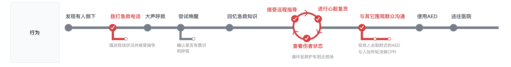进行专家访谈
我们与专业救援队的人士进行了访谈，了解他们的工作模式，与他们分享了我们的研究成果，并让他们从专业的视角给我的设计方向提出建议。
我们的方案
我们的方案重点在于通过 App 与智能 AED，连接社区的救援资源。
愿意为急救出力的人们可以下载 App 成为志愿者。当意外发生时，急救中心接线员可以激活救援信号，此时手机 App 便会收到提醒并会依据志愿者所在的位置分配救援任务。
AED 也会被接入救援网络，急救中心接线员激活的信号会让一定范围内的 AED 发出声音警报，以此吸引周围人群的注意力，最大限度争取到更多的人参与到救援中。
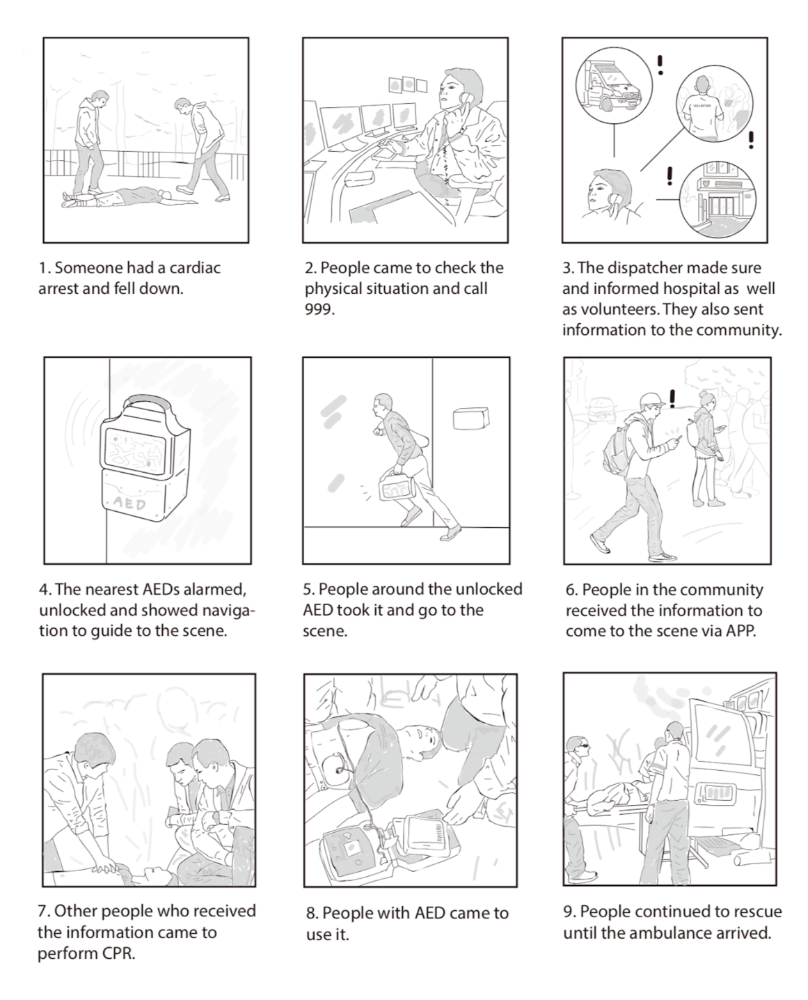最终产出
App Design
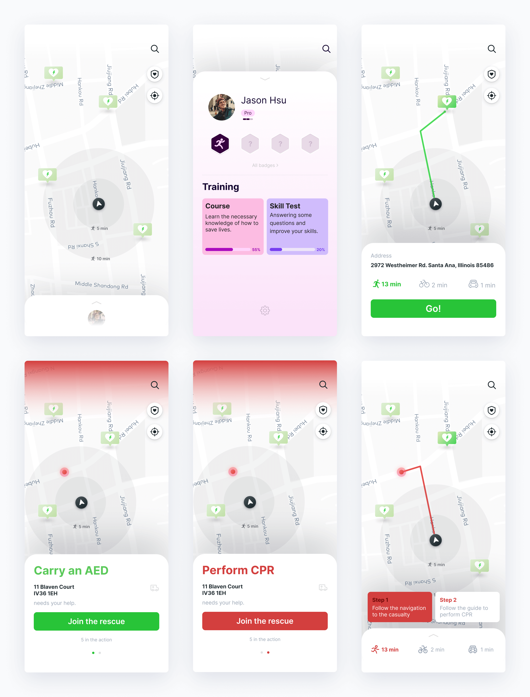常态
没有紧急事件发生的形态。此时 App 承载的主要功能为信息科普，主要目的为提高用户的救援 知识。
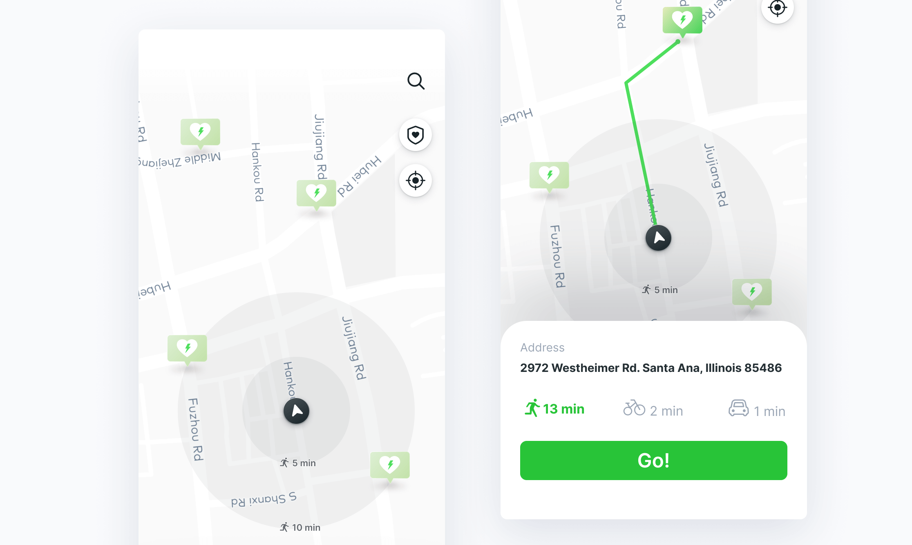通过勋章，成就等系统，激励志愿者学习更多急救知识
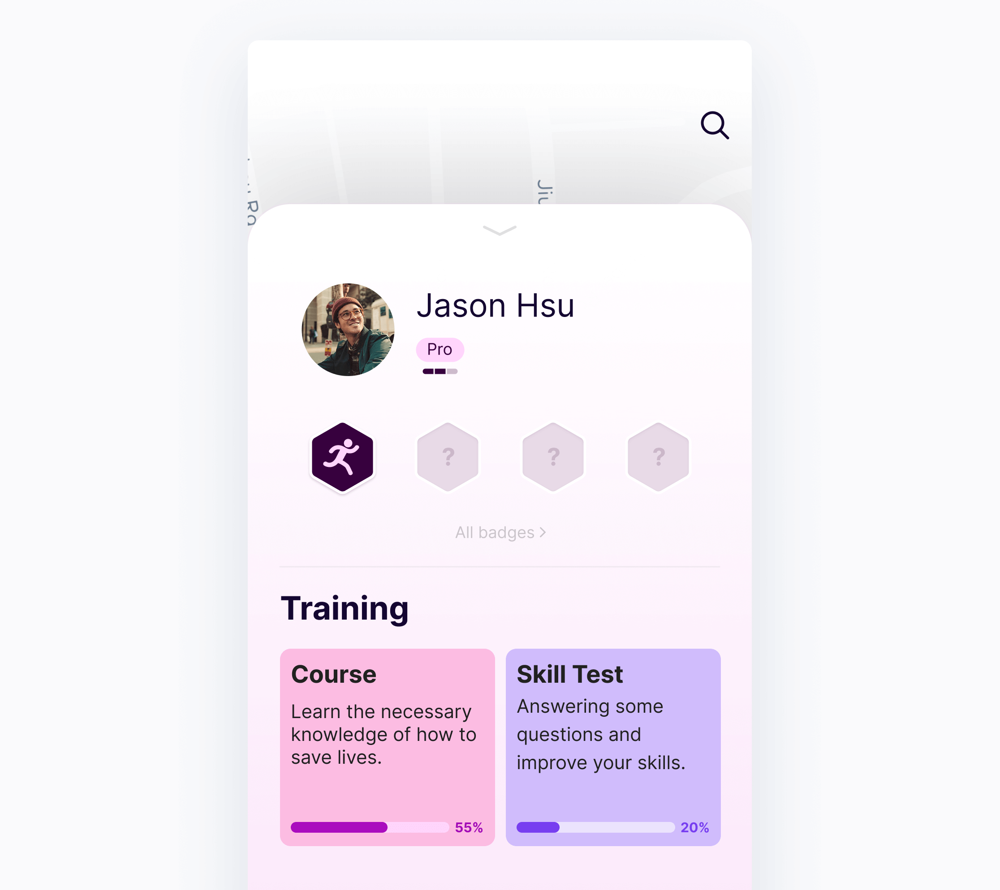紧急态
急救中心激活救援信号后的状态。在此状态下，除救援外的功能都会消失。根据志愿者所处的位置，救援阶段的不同，反馈不同的救援任务。
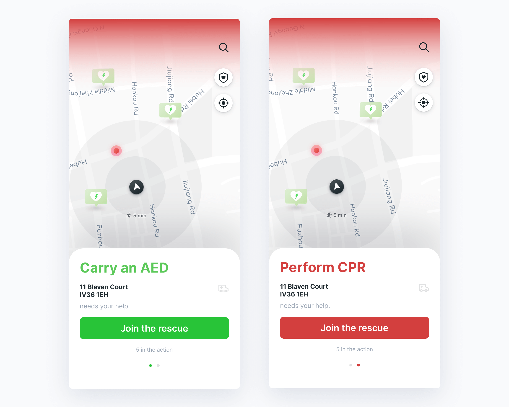通过任务卡片的方式将救援流程拆解，依照卡片的指引志愿者可以无障碍完成任务
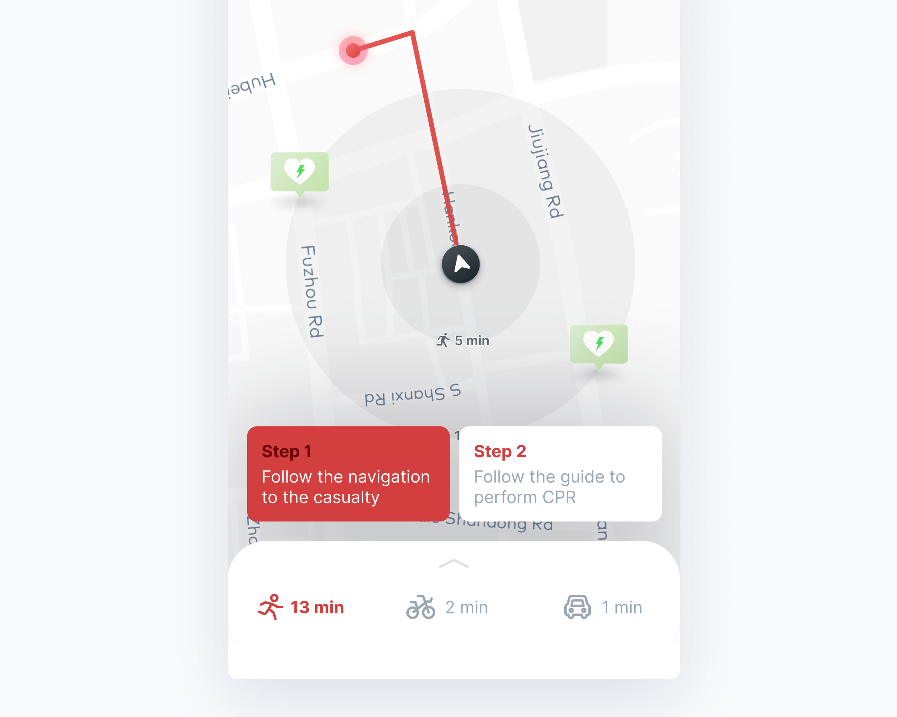智能 AED
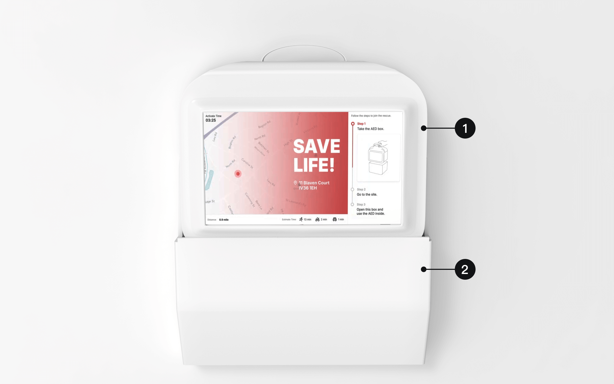
1.带有引导界面的 AED 盒子
2.AED 盒子的底座，由急救中心远程解锁。激活后会发出声响引人注意
激活
急救中心发出救援信号后，AED 进入激活状态。此时的 AED 会发出警报声响，同时显示屏上会显示事件发生的地点和救援指南。
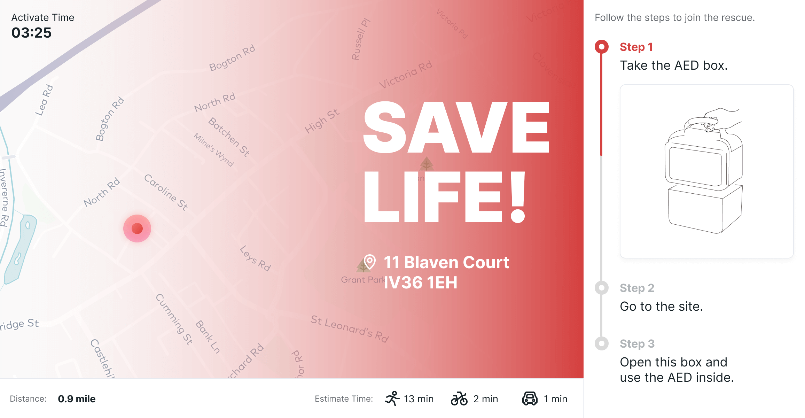携带
在被人取下后，AED的屏幕内容会自动切换至导航模式，指引携带者前往事发地。
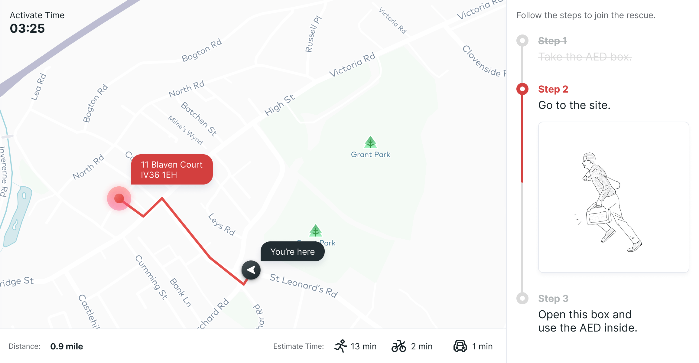